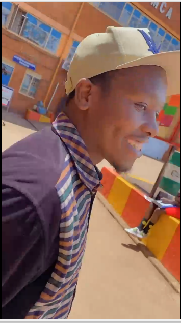
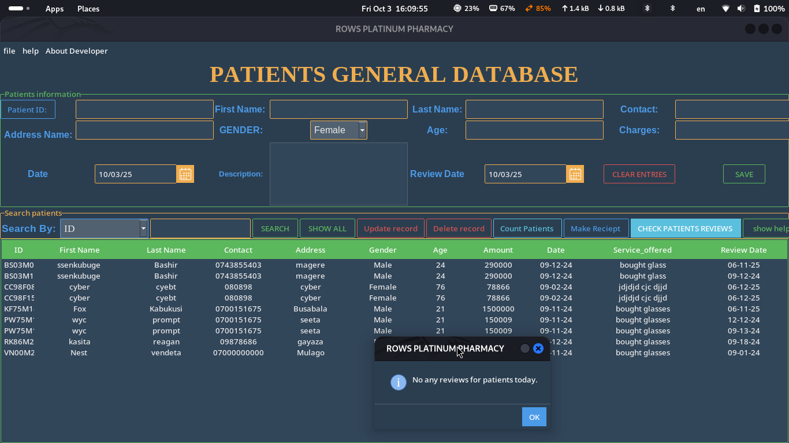
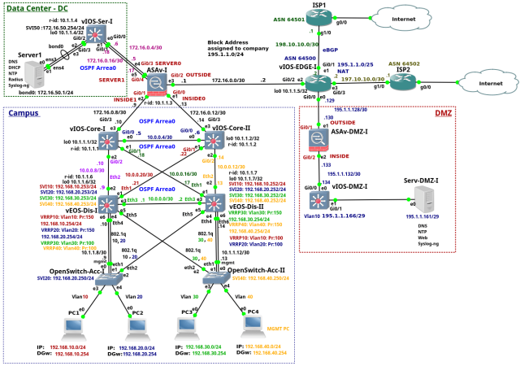
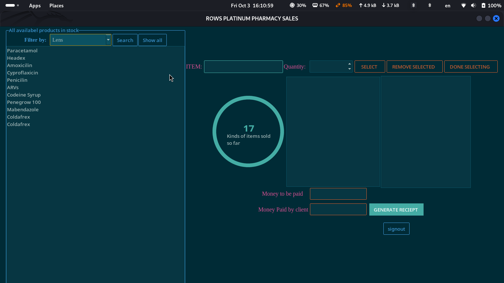

SYSTEM LOCATION: SEETA KASANGATI, UGANDA
I am **Ssenkubuge Bashiri**, a certified **Cisco network engineer, network administrator** and **Software Developer**. My expertise covers both **fortifying networks** and building **custom, secure Python/SQL applications** tailored to client needs, ensuring data integrity and compliance from the ground up.
My mission is to **fortify digital landscapes** through **proactive threat hunting** and **efficient, user-centric automation**. I merge deep network engineering with robust Python scripting to build systems—like the clinic automation—that are not just functional but also **secure, reliable, and verified**.
KALI LINUX | NMAP | METASPLOIT | WIRESHARK | CISCO | PYTHON | SQL | MIKROTIK (ROUTEROS)

**Objective:** Develop a robust, user-friendly management and automation system for a local clinic. **Action:** Engineered a **Python/SQL application** to handle patient records, appointment scheduling, and billing, integrating **role-based access controls** and **input validation** to meet basic healthcare data security requirements. **Result:** Automated **70% of manual data entry**, reducing human error and significantly improving data confidentiality and system efficiency.

**Objective:** Establish an impenetrable network perimeter and control access for a high-value client. **Action:** Implemented a **multi-phase VPN system** and customized **DPI (Deep Packet Inspection) firewall policies** on MikroTik devices. **Result:** Successfully blocked **99% of unauthorized traffic attempts** and provided secure remote access, achieving a verifiable increase in network trust scores.

**Objective:** Conduct a comprehensive **Web Application Penetration Test (WAPT)** on a client's e-commerce platform. **Action:** Systematically tested the application against the **OWASP Top 10**, simulating attacks like **Broken Access Control** and **XSS**. **Result:** Identified and fully patched **7 high-risk vulnerabilities**, eliminating potential financial loss and securing customer data.
| Name | SSENKUBUGE BASHIRI |
|---|---|
| Date of Birth | 11TH NOVEMBER 2000 |
| SSENKUBUGEBASHIRI23@GMAIL.COM | |
| Phone | +256 701 381949 |
A highly focused **Cyber Security Operator** and disciplined Computer Scientist recognized for professionalism, critical thinking, and a strong commitment to **proactive digital defense**. Expertise in network security, scripting for automation, vulnerability assessment, and adhering to strict compliance protocols. **Ready for immediate deployment.**
| Period | Institute/School | Award/Certification Focus |
|---|---|---|
| 2024-2025 | CISCO NETWORKING ACADEMY | **Enterprise Networking, Security and Automation** (Focus on Advanced ACLs, VPNs, and Hardening) |
| 2023-2025 | YMCA | Diploma in Computer Science |
| 2019 | Comprehensive College Kitetika | Uganda Advanced Certificate of Education |
| Period | Organisation | Role & Security Mandate |
|---|---|---|
| 2023 | ROWS PLATINUM OPTICS | Software Developer: Implemented **secure authentication** and input validation protocols to minimize attack surface. |
| 2024 | WYCTECH SOLUTIONS | System Administrator: Managed **security policy deployment, patch management,** and rigorous system hardening across all endpoints. |
| 2025 | FUTURE STARS KINDERGARTEN | IT Specialist: Conducted **essential security awareness training** for staff and managed endpoint protection systems. |
Ready to discuss your security posture or potential threat vectors? Initiate contact below. This channel is monitored.
EMAIL: SSENKUBUGEBASHIRI23@GMAIL.COM
PHONE: +256-701-381949
LINKEDIN: /SSENKUBUGEBASHIRI
Github: github